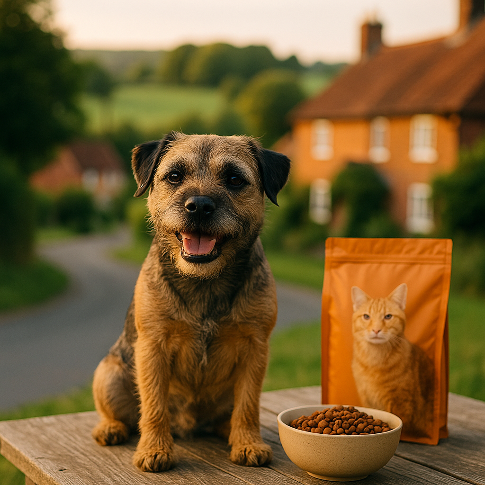
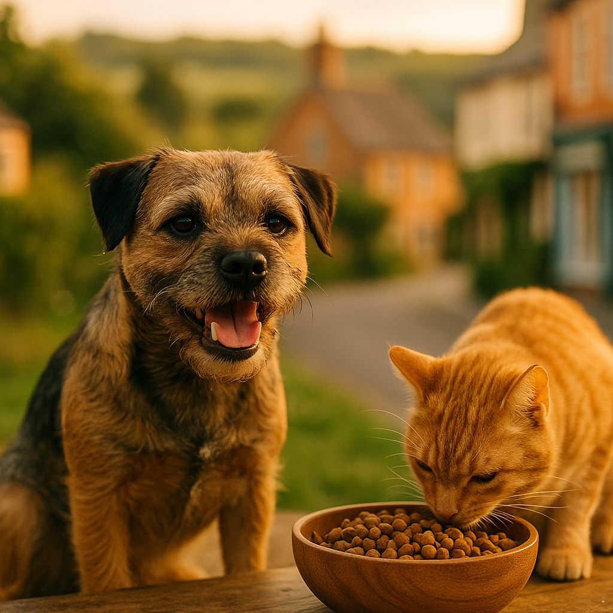
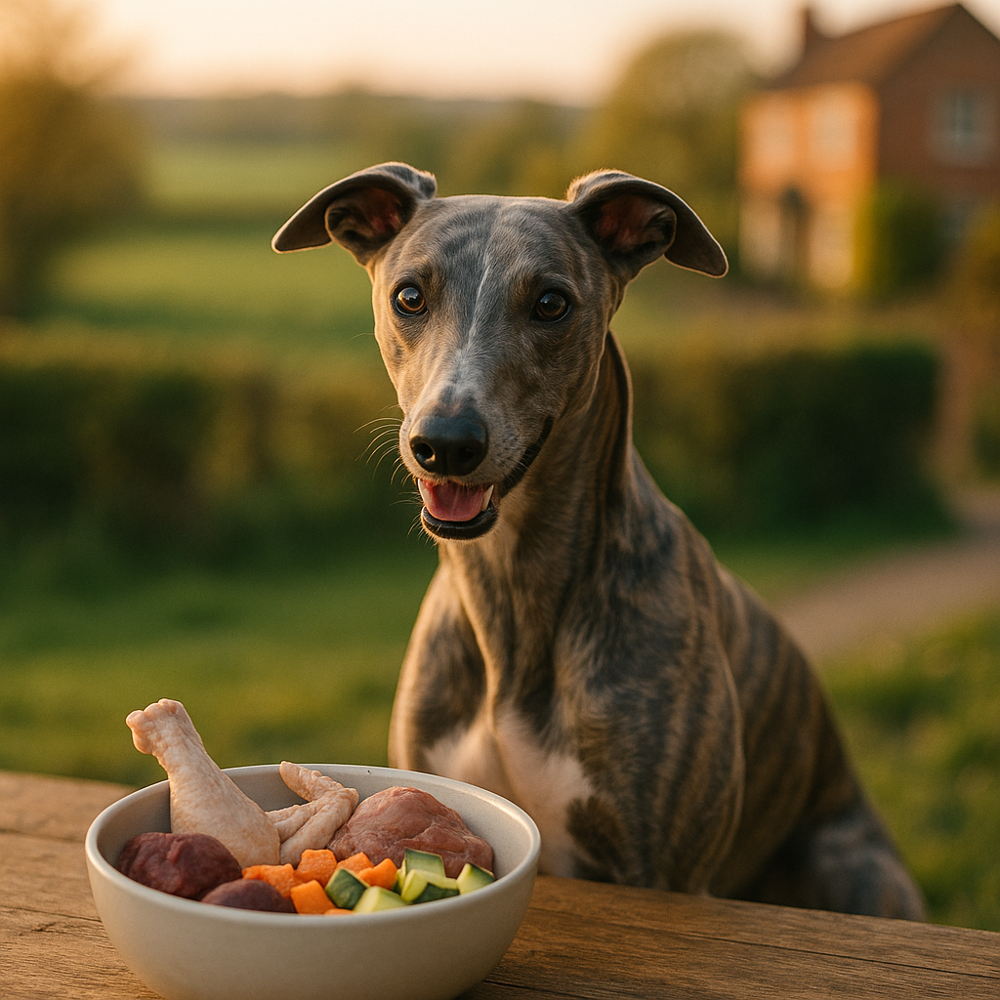

Food & Nutrition
Expert advice on pet nutrition, dog food options, fresh food subscriptions, and diet recommendations for UK pets.
About This Category
We provide expert, independent guides on this topic for UK pet owners. Every guide is researched from real UK experiences, pricing, and recommendations — no sponsorship, no fluff.

Homemade Dog Treat Recipes UK 2026: Vet-Approved Ideas Your Dog Will Love
Skip the packet and make your dog something special. These vet-approved homemade treat recipes use simple UK store-cupboard ingredients.

Raw Food Diet for Puppies UK 2026: A Safe and Practical Guide
Thinking about raw feeding your puppy? Here is what UK vets recommend, plus practical portion guidance and food safety tips.
Kitten Feeding Guide UK 2026: How Much, How Often and What to Feed
Everything new UK kitten owners need to know about feeding, from first weeks to adulthood, in one clear guide.
Best Food for Ragdoll Cats UK 2026: Vet-Reviewed Wet, Dry and Raw Picks
Ragdolls need more protein and careful portion control than most cats. Here are the UK foods our reviewers rate most highly for this gentle giant.
Best Food for Dogs With Itchy Skin UK 2026: Vet-Backed Picks for Sensitive Coats
If your dog can't stop scratching, the right food can make a real difference. Here are the vet-backed picks for itchy, sensitive dogs in 2026.
Homemade Dog Biscuits UK: Simple Recipes Your Dog Will Love
Skip the packet and bake something your dog will go wild for. These easy UK homemade dog biscuit recipes use everyday ingredients you already have.

Best Food for Cats With IBD UK 2026: Vet-Backed Choices Explained
Struggling to feed a cat with IBD? We round up the best UK options approved by veterinary nutritionists.
Best Food for Cocker Spaniels UK 2026: Top Picks for Every Budget
Cocker spaniels are prone to sensitive stomachs and ear issues linked to diet. Find the UK foods that vets and owners trust most for this popular breed.

Best Cat Biscuits UK 2026: Dry Food Your Cat Will Actually Eat
From budget-friendly kibble to premium grain-free options, these are the best cat biscuits you can buy in the UK right now.

Raw Food for Dogs UK: A Practical Guide to Feeding Raw Safely in 2026
Thinking about switching your dog to raw food? Here is everything UK owners need to know before making the change.
Best Puppy Food UK 2026: Vet-Reviewed Wet, Dry and Raw Options
Choosing the right food sets your puppy up for life. Here are the best UK options, reviewed honestly.
Best Dry Puppy Food UK 2026: Vet-Reviewed Picks for Every Breed
From budget-friendly kibble to grain-free options, here are the best dry puppy foods available in the UK right now.
Best Cat Food UK 2026: Wet, Dry and Raw Compared
From budget dry biscuits to premium raw pouches, we rank the best cat foods available in the UK right now.

Best Fresh Dog Food Subscription UK: Butternut Box vs Tails.com vs Pure
Detailed comparison of UK fresh dog food subscriptions. Pricing, ingredients, shipping, and how they compare to kibble and raw feeding.
Find Trusted Providers
All the brands we recommend in this category have been verified for UK customers and offer good value.
Learn about our affiliate approach →